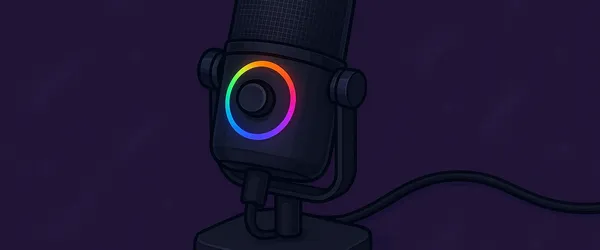

Los Mejores Micrófonos para Streaming y Gaming de 2025 (Probados por Expertos)
Contenido actualizado en mayo de 2025
Soy Carlos López, analista tecnológico con más de 15 años de experiencia en productos para gamers y creadores de contenido. En esta guía te muestro los mejores micrófonos para streaming y gaming de 2025, seleccionados tras pruebas reales para ayudarte a elegir con confianza. Aquí no hay publicidad disfrazada: solo opiniones imparciales basadas en pruebas técnicas, comparativas claras y recomendaciones directas según tu presupuesto y nivel.
Índice de Contenidos
- ¿Qué es un micrófono gaming?
- ¿Por qué deberías comprar un micrófono gaming?
- Comparativa real de los mejores micrófonos para gaming y streaming en 2025
- ¿Cuál compraría yo?
- Preguntas frecuentes
¿Qué es un Micrófono Gaming?
Un micrófono gaming o para streaming no es solo un accesorio más: es la herramienta que define cómo te escuchan. La calidad de sonido puede marcar una gran diferencia en la experiencia del espectador o compañero de equipo. Personalmente, creo que un buen micrófono mejora no solo la comunicación, sino también tu imagen como creador o gamer.
¿Por Qué Deberías Comprar uno?
- Calidad de audio superior: sonido nítido, sin ruidos molestos ni distorsiones.
- Diseño profesional: añade presencia y seriedad a tu setup.
- Fácil configuración: muchos modelos son plug & play.
- Compatibilidad con software: mejora tu voz con filtros o efectos en tiempo real.
Comparativa real de los mejores micrófonos para gaming y streaming en 2025
Razer Seiren V3 Chroma

⭐ Valoración del experto: 4.5/5
Este modelo me impresionó por su iluminación personalizable y su captación de audio clara. Muy recomendado si te importa tanto la estética como la calidad. En mis pruebas, destacó por lo limpio de su sonido, con una buena supresión del ruido de fondo. Su patrón cardioide se centra en tu voz y elimina interferencias laterales, ideal para streaming o videollamadas. Los controles táctiles me resultaron cómodos, y la sincronización RGB con otros dispositivos Razer le da un toque profesional al setup. Un micrófono tan funcional como vistoso.
Principales características:
- Iluminación RGB sincronizable
- Patrón cardioide perfecto para voz
- Controles táctiles en el micrófono
SteelSeries Alias

⭐ Valoración del experto: 4/5
Tras probarlo, noté un gran salto de calidad respecto a micrófonos de gama media. Su diseño robusto y sonido cálido lo hacen ideal para streamers. Me gustó especialmente la definición de la voz incluso con tonos bajos, algo que otros micrófonos no captan bien. Su estética minimalista combina con cualquier escritorio, y la instalación fue rápida y sin complicaciones. Además, cuenta con un software intuitivo que permite ajustar el ecualizador y aplicar filtros en tiempo real.
Principales características:
- Resolución de audio profesional
- Estética limpia y minimalista
- Plug and play con software dedicado
Trust Gaming GXT 252 Emita Plus

⭐ Valoración del experto: 4/5
Me sorprendió lo completo del pack: incluye brazo articulado, filtro pop y más. Muy completo para empezar a grabar con calidad profesional. En mis pruebas, el sonido fue claro y con buena presencia, sin ruidos molestos. El montaje fue sencillo y el brazo se ajusta fácilmente a cualquier posición. Ideal si estás empezando en el mundo del streaming o los pódcasts. Su relación calidad precio es de las mejores del mercado actual.
Principales características:
- Incluye todos los accesorios
- Calidad sólida por su precio
- Fácil de montar y ajustar
Logitech G Yeti GX

⭐ Valoración del experto: 4.5/5
El clásico se renueva. Excelente calidad de grabación, controles intuitivos y diseño elegante. Una apuesta segura para cualquier setup. Me gustó la facilidad con la que puedes ajustar la ganancia directamente desde el cuerpo del micrófono, y la cancelación de ruido hace un gran trabajo incluso en ambientes con ventiladores o teclado mecánico. Si valoras calidad sin complicaciones y una estética moderna, este modelo cumple perfectamente.
Principales características:
- Alta sensibilidad con cancelación de ruido
- Controles de ganancia y mute accesibles
- Diseño moderno y compacto
SteelSeries Alias Pro Kit

⭐ Valoración del experto: 5/5
Este kit me dejó boquiabierto. Con interfaz XLR y calidad de estudio, es ideal si quieres subir el nivel de tus grabaciones o directos. Al probarlo, noté una definición vocal que recuerda a estudios profesionales. La interfaz incluida facilita la conexión a cualquier sistema sin complicaciones técnicas. Está claramente orientado a streamers que buscan lo mejor sin compromisos. Es una inversión seria, pero si quieres calidad de verdad, no hay duda de que vale cada euro.
Principales características:
- Conectividad XLR + interfaz incluida
- Calidad de sonido de nivel profesional
- Diseñado para streamers exigentes
¿Cuál compraría yo?
Después de probarlos todos, mi elección personal es el SteelSeries Alias Pro Kit. Su sonido es el más profesional que he probado hasta la fecha, y el hecho de que incluya una interfaz XLR lo pone en otro nivel. La fidelidad de voz que consigue es realmente impresionante y marca una diferencia enorme cuando haces streaming o grabaciones de voz. Además, su diseño estético y funcional encaja perfectamente en setups exigentes. Si buscas destacar en calidad y presencia, este es tu micrófono.
🎙 Ver oferta actual en AmazonPreguntas Frecuentes (FAQ)
¿Qué tipo de conexión me conviene: USB o XLR?
Si estás empezando, los micrófonos USB son perfectos: se conectan fácilmente y ofrecen buena calidad. Los XLR son para streamers más avanzados que buscan un sonido profesional y están dispuestos a usar interfaces externas.
¿Un micrófono caro mejora cómo suena mi voz?
Un micrófono de gama alta no cambia tu voz, pero sí la graba con más fidelidad, eliminando ruidos de fondo y captando matices que otros micrófonos no registran. Eso transmite profesionalismo en tus directos o grabaciones.
¿Qué micrófono es bueno para Twitch o YouTube?
Para Twitch o YouTube, el SteelSeries Alias es una gran opción por su equilibrio entre calidad y facilidad de uso. Si buscas lo mejor sin importar el precio, el Alias Pro Kit es ideal por su sonido de nivel estudio.
🎙 SteelSeries Alias Pro Kit en Amazon¿Necesito accesorios como brazo o filtro pop?
No son obligatorios, pro mejoran mucho tu experiencia. El brazo reduce ruidos por golpes y el filtro pop suaviza los sonidos fuertes. Algunos kits como el Trust GXT 252 ya los incluyen todo.
🎙 Trust Gaming GXT 252 Emita Plus en AmazonSi quieres que te escuchen bien, pero también escuchar mejor, echa un vistazo a nuestros auriculares con calidad de estudio para gaming.